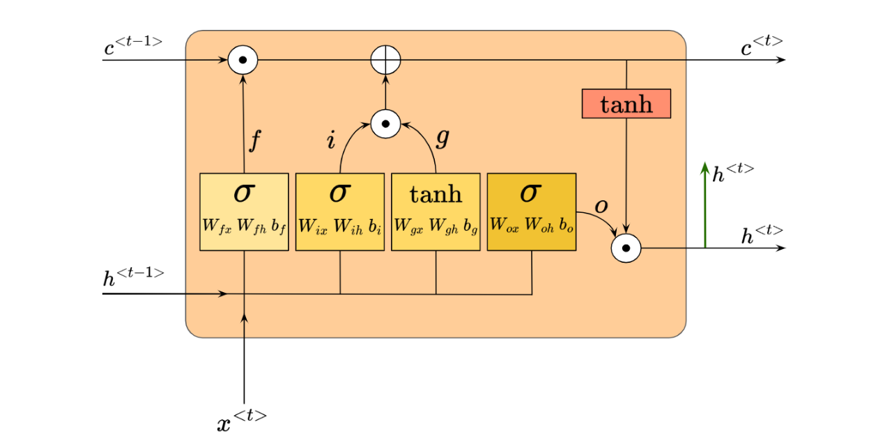

Project notes
Building Long Short-Term Memory (LSTM) from Scratch
In this project, I build an LSTM-based model with PyTorch and compare its sentence-generation performance with the RNN model from an earlier project.
Spring 2025
Long short-term memory networks are designed to preserve useful information across longer sequences. In this project, I build an LSTM language model with PyTorch, then compare its generated sentences with the results from my recurrent neural network implementation.
1. Overview
An LSTM extends the recurrent network idea with a cell state and gates. These components help the model decide what information to keep, update, and expose while processing a sequence.

2. The LSTM Cell
The forget, input, and output gates control how the hidden state and cell state change at each time step. Their sigmoid activations produce values between zero and one, which lets the cell retain or discard information gradually.
3. PyTorch Implementation
The model uses an embedding layer, an LSTM layer, and a linear output layer. During training, the network learns to predict the next token from the preceding context. During generation, the predicted token is fed back into the model to extend the sentence.
import torch
from torch import nn
class LSTMTextModel(nn.Module):
def __init__(self, vocabulary_size, embedding_size, hidden_size):
super().__init__()
self.embedding = nn.Embedding(vocabulary_size, embedding_size)
self.lstm = nn.LSTM(embedding_size, hidden_size, batch_first=True)
self.output = nn.Linear(hidden_size, vocabulary_size)
def forward(self, tokens, state=None):
embedded = self.embedding(tokens)
sequence, state = self.lstm(embedded, state)
return self.output(sequence), state
4. Comparison with the RNN
The comparison focuses on how the two models preserve context while generating text. The LSTM's cell state gives it a dedicated path for carrying information over longer spans, while the simpler RNN can be more sensitive to vanishing gradients.
The final results and examples can be added here as training experiments are recorded.